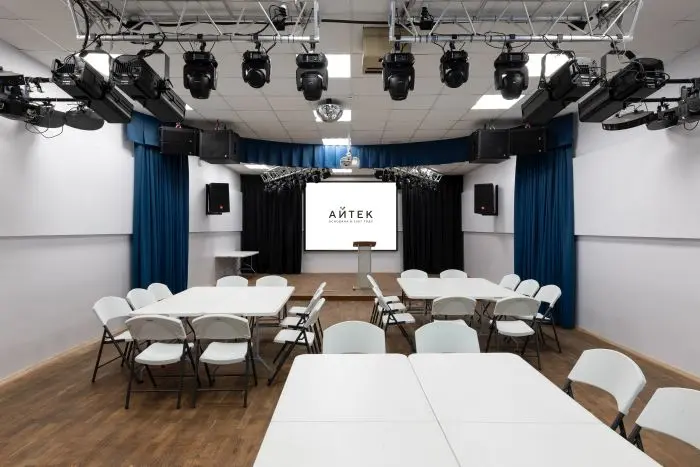

Малый актовый зал
ГБОУ Школы № 2030
от 5 500 000 ₽ с НДС 22%Состав оборудования
Проектор 10000 анси · Проекционный моторизированный экран 3 х 5м · Концертная звуковая система · Система микрофонов для пения и хора · Театральное освещение · Антрактно-раздвижной занавес · Система управления
Также входит в стоимость
Проектирование · Монтаж и пусконаладка